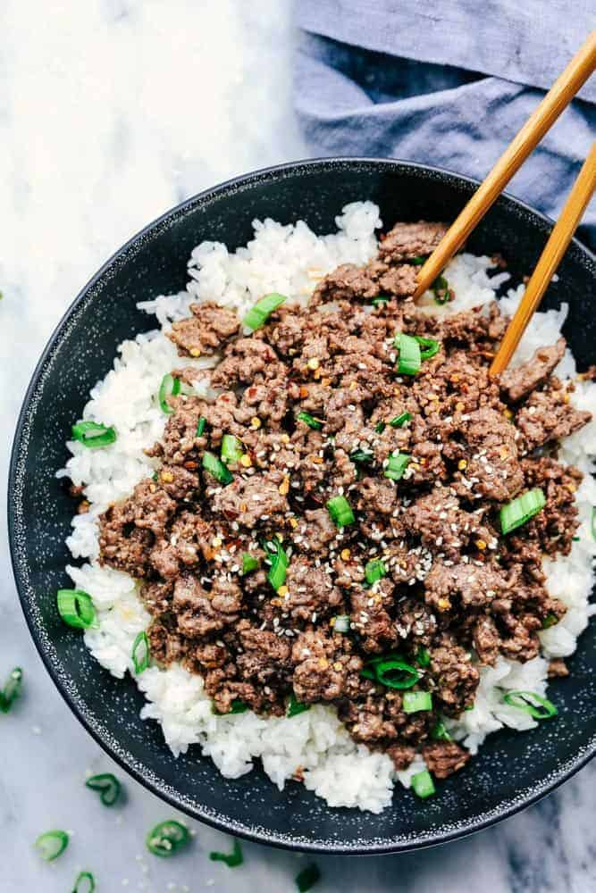

Hamburger Rice

Hamburger rice is a meal that is both, budget friendly and tasty for the entire family!
Ingredients
- 1 pound hamburger
- 2 cups uncooked rice
- 2 8oz cans of Cream of Mushroom Soup
- 2 cups water
- 2 10oz cans of sweet corn
- 2 Cups of shredded cheese
Directions
- Preheat oven to 350F
- Bring the water to a boil in a medium saucepan
- In the meantime, wash your rice
- Once the water is boiling add rice and cook for 7 mins
- Brown the hamburger and season to taste
- Combine the rice,hamburger, and corn in a glass baking pan
- Cover with cheese and bake for 3-5 mins, or until all cheese is melted
- Remove from oven and serve with soy sauce and enjoy!